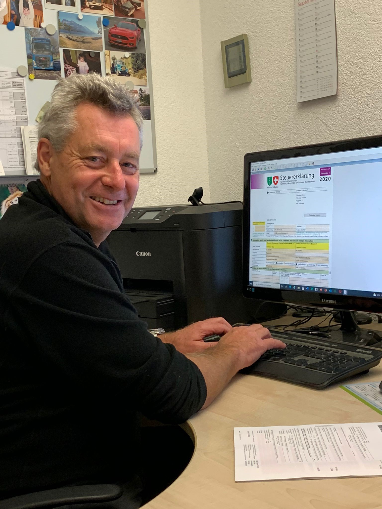

Gegründet wurde das Treuhandbüro in den 90er Jahren von Claudia Tellenbach. Zunächst waren es nur einige wenige Privat- und Firmenkunden, welche Claudia ihre Steuererklärung oder Buchhaltung anvertrauten. Über die Jahre wurde der Kundenstamm jedoch immer grösser, weshalb auch Hans Tellenbach anfing mitanzupacken. 2003 fiel schliesslich der Entscheid, das Treuhandbüro an Hans Tellenbach zu übergeben. Seither führt er das Treuhandbüro als Einzelfirma. Unterstützt wird er dabei von Bürohund Jeff, welcher häufig unter dem Schreibtisch anzutreffen ist.
